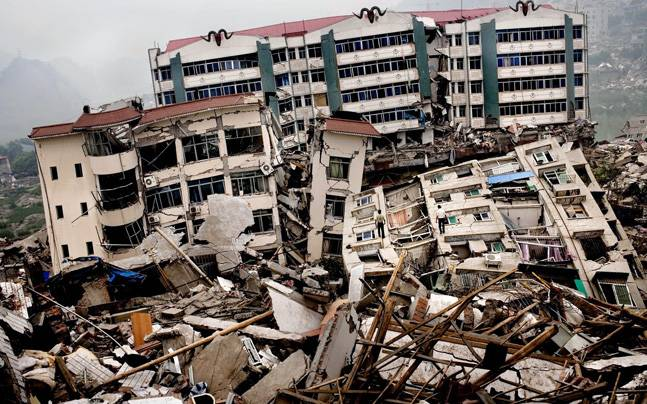

Earthquakes
Coping with an earthquake requires quick thinking and preparedness. Here are steps to help you cope with an earthquake:
-
Drop, Cover, and Hold On: If you feel shaking, drop to the ground, take cover under a sturdy piece of furniture, and hold on until the shaking stops.
Stay Indoors: If you are indoors, stay there. Avoid running outside as falling debris can be dangerous.
Stay Away from Windows and Mirrors: Glass can shatter during an earthquake. Avoid standing near windows and mirrors.
If You're Outdoors: Move away from buildings, streetlights, and utility wires. Find an open area away from hazards.
If You're in a Vehicle: Pull over to a safe location, away from overpasses and buildings. Stay in the vehicle until the shaking stops.
After the Earthquake: Check yourself and others for injuries. Be prepared for aftershocks. If necessary, administer first aid.
Evacuate if Necessary: If your home is severely damaged, and it's unsafe to stay, evacuate. Follow local authorities' guidance.
Turn Off Utilities: Shut off gas, water, and electricity if you suspect damage to these systems.
Listen to Official Information: Stay informed through a battery-operated radio or your mobile device for emergency updates and instructions.
Prepare an Emergency Kit: Have a kit with essentials, including water, food, first-aid supplies, and important documents.
Be a Good Neighbor: Check on your neighbors, especially those who are elderly or have special needs.
Remember, earthquakes can be sudden and unpredictable. Being prepared and knowing what to do during and after an earthquake can greatly increase your safety and reduce the risk of injury or damage.